.Partie 1 - Analyse statistique
Table of Contents
Cette section présente les résultats de la première partie d’expérimentations, sur l’analyse des coûts énergétiques et des performances de modèles sur des applications en détection de changement et clustering par algorithmes basés sur des statistiques sans apprentissage.
Structure des expériences
Méthodologie
Détection de changements, avec classification binaire : zone avec changement(s), zone sans changement. Clustering avec un nombre de clusters fixé Les données utilisées sont des images SAR polarisées.
La réalisation des expériences s’effectue en deux temps : l’exécution des algorithmes, puis la récupération des résultats de consommation.
Méthodes
Les différentes méthodes utilisées sont la méthodes du GLRT (Generalised Likelihood Ratio Test), du robust GLRT et de la log difference pour la détection de changement et de la métrique logdet et riemann pour le clustering.
Détection de changement
La méthode GLRT est explicitée dans la partie I. Principe de détection de changement, et est basée sur la statistique $\hat{\Lambda}_G$.
$$ \hat{\Lambda}_G = \frac{|\hat{\Sigma}0^{SCM}|^{TN}}{\prod{t=1}^{T}|\hat{\Sigma}_t^{SCM}|^{N}} $$
Où : $$ \forall t, \hat{\Sigma}t^{SCM} = \frac{1}{N} \sum{k=1}^{N} {x_k^(t)x_k^(t)}^H \ \hat{\Sigma}0^{SCM} = \frac{1}{T} \sum{k=1}^{T} \hat{\Sigma}_t^{SCM} $$
La méthode robust GLRT est basée sur la méthode GLRT mais prend en compte le caractère non-gaussien des données. Une information de texture, c’est-à-dire d’hétérogénéité entre pixels voisins, au sein de la fenêtre glissante d’estimation des matrices de covariance est prise en compte et testée. Cette méthode est basée sur la statistique $\hat{\Lambda}_{MT}$.
$$ \hat{\Lambda}{MT} = \frac{|\hat{\Sigma}0^{MT}|^{TN}}{\prod{t=1}^{T}|\hat{\Sigma}t^{TE}|^{N}} \prod{k=1}^{N} \frac{\left( \sum{t=1}^{T} q\left( \hat{\Sigma}0^{MT}, x_k^{(t)} \right) \right)^{Tp}} { T^{Tp} \prod{t=1}^{T} \left( q\left( \hat{\Sigma}_0^{TE}, x_k^{(t)} \right) \right)^p } $$
Où : $$ q(\Sigma,x) = x^H\Sigma^{-1}x \ \forall k, \forall t, S_k^{(t)} = {x_k^{(t)}x_k^{(t)}}^H $$ et $$ \hat{\Sigma}0^{MT} = \frac{p}{N}\sum{k=1}{N}\frac{\sum_{t=1}^{T}S_k^{(t)}}{\sum_{t=1}^{T}q\left(\hat{\Sigma}_0^{MT}, x_k^{(t)} \right)} $$ et $$ \hat{\Sigma}t^{TE} = \frac{p}{N}\sum{k=1}{N}\frac{S_k^{(t)}}{q\left(\hat{\Sigma}_t^{TE}, x_k^{(t)} \right)} $$ l’estimateur de Tyler.
La méthode log difference est la méthode la plus simple et necéssitant le moins de calculs, mais également la moins performante parmi celles présentée. La statistique utilisée est $\hat{\Lambda}_{LD}$. Celle-ci est compatible uniquement sur deux temps $t_0$ et $t_1$.
$$ \hat{\Lambda}{LD} = \frac{1}{p} \left( \sum{\text{bande}} \log x^{(t1)} - \sum_{\text{bande}} \log x^{(t0)} \right) $$
Execution des algorithmes selon des intervalles de paramètres
Les expériences débutent par l’exécution des algorithmes selon des paramètres renseignés en entrée.
- pour le cas de la détection de changement :
1qanat experiment run conso-change --image [PATH_TO_IMAGE] --cores [NUMBER_OF_THREADS] --window [WINDOW_SIZE] --robust [0, 1 or 2] --number_run/-n [NUMBER_OF_REPETITIONS_TO_RUN]
2// or
3qanat experiment run conso-change --param_file [PATH_TO_PARAM_FILE]
- pour le cas du clustering :
1qanat experiment run conso-clustering --image [PATH_TO_IMAGE] --cores [NUMBER_OF_THREADS] --window [WINDOW_SIZE] --riemann [0 or 1] --number_run/-n [NUMBER_OF_REPETITIONS_TO_RUN]
2// or
3qanat experiment run conso-clustering --param_file [PATH_TO_PARAM_FILE]
L’exécution des algorithmes permet la création de plusieurs fichiers en sortie :
times.txtcontient des checkpoints de temps clés entres différentes étapes d’exécution des algorithmes : le temps de début d’expérience, le temps de fin de période sans exécution “à froid” et de début d’exécutions “de chauffe” sans mesure, puis les temps de début et fin de chaque répétition d’exécution.output/contient les fichiers.npyde sortie d’algorithmes (en détection de changement ou en clustering)emissions/contient les fichiers.csvde sortie de mesure de consommation énergétique et d’émissions de carbone du package Python CodeCarbon
Récupération des données de consommation et analyse
Enfin, pour réaliser une analyse statistique des données de consommation énergétique et les performances du modèle pour un ensemble d’expériences :
1python performance-tracking/experiments/conso/stats_summary.py [RUN_ID(S)] --grouped/-g [True/False] --file/-f [True/False]
Cette commande permet de créer un fichier résultats output_all.csv contenant toutes les données de consommation et de performances avec une ligne par exécution si --file False en interrogeant la base de données InfluxDB de stockage de données de consommation à partir du fichier times.txt, et en calculant les performances des algorithmes en utilisant les fichiers de sorties compris dans output/. Les données d’émissions issues des fichiers de emissions/ sont également prises en compte. A partir du fichier output_all.csv, les analyses de résultats sont réalisées et enregistrées sous la forme de graphiques (distribution des données, covariances entre les variables, ACP).
La phase de création du fichier output_all.csv pouvant être coûteuse en termes calculatoires, il est possible de réeffectuer les analyses sur un fichier déjà créé via l’option --file True.
L’option --grouped True permet d’effectuer ces analyses lorsque les exécutions via Qanat ont été réalisées par l’utilisation de --param_file.
Explication des paramètres et des variables
| Variable/Paramètre | Paramètre ou variable | Unité | Commentaire |
|---|---|---|---|
| Méthode | Paramètre | Nature de la méthode utilisée parmi GLRT, robust GLRT et log difference pour la détection de changement et clustering logdet et clustering riemann pour le clustering | |
| Threads | Paramètre | Nombre de threads | Nombre de threads utilisées pour les calculs en parallèle (1 ou 12) |
| Window | Paramètre | Pixels | Taille de la fenêtre glissante utilisée dans l’estimation de la matrice de covariance |
| Image | Paramètre | Série temporelle / Image utilisée | |
| Energy | Variable | W $\times$ s | Consommation énergétique de la machine basée sur la mesure de puisance par une prise connectée |
| Emissions | Variable | Emissions en $\text{CO}_2$ estimées par le package Python CodeCarbon | |
| Memory | Variable | % $\times$ s | Mémoire RAM libre lors de l’éxecution |
| Duration | Variable | s | Durée d’exécution |
| CPU | Variable | % $\times$ s | Consommation de la mémoire du CPU |
| Temperature | Variable | °C $\times$ s | Température interne du CPU |
| Reads | Variable | Nombre de lectures $\times$ s | Nombre de lectures du disque |
| AUC | Variable (change detection) | Aire sous la courbe ROC | |
| Calinski-Harabasz score | Variable (clustering) | Rapport de la variance inter-cluster sur la variance intra-cluster | |
| Davies-Bouldin score | Variable (clustering) | Moyenne du rapport maximal entre la distance d’un point au centre de son groupe et la distance entre deux centres de groupes |
L’incertitude de la mesure de puissance par la prise connectée est de $\pm 3W$ pour des mesures inférieures à $300W$, et de $\pm 1%$ pour des mesures supérieures.
Plan d’expérience
4 paramètres seront explorés dans ces expériences :
- L’algorithme utilisé (GLRT, robust GLRT, log difference, clustering logdet, clustering riemann)
- Nombre de threads (1, 12)
- Taille de la fenêtre d’estimation de covariance ($5 \times 5$, $7 \times 7$, $21 \times 21$)
- Données utilisées (Scene_1small, Scene_2small, Scene_3small)
Les données utilisées sont tirées de découpes des images Scene_1, Scene_2 et Scene_3 et de dimension $1000 \times 500$ pixels. Scene_1small compte 2 images, Scene_2small compte 4 images et Scene_3small compte 17 images. La tâche de clustering est effectuée sur la première image uniquement.
A réaliser alors : $5 \times 2 \times 3 \times 3 = 90 \text{ scénarios}$
On observe des temps d’exécution variant fortement selon les paramètres et la méthode utilisée. En effet, la méthode de détection de changement de GLRT robuste tend à nécessiter plus d’une heure d’éxecution sur un ensemble d’images avec parallélisation (et moins de temps sans parallélisation). Au contraire, la méthode GLRT est associée à des temps d’exécution beaucoup plus rapide sur les mêmes données (de l’ordre de quelques dizaines de secondes). Ceci peut représenter un problème dans la récolte des données de consommation, le pas de temps entre deux mesures de consommation électrique étant de 30 secondes.
Ainsi notre choix a été de répéter les expériences sur le modèle de GLRT robuste 10 fois sur les données Scene_1small, et 50 fois pour les autres modèles.
A réaliser alors : $6 \times 10 + 1 \times 50 + 54 \times 50 = 2810 \text{ exécutions}$
Résultats
Pour un certain nombre d’expériences, la durée d’exécution fut inférieure au pas de temps de mesure de consommation énergétique par la prise connectée. Nous pourrions alors suggérer dans notre analyse d’approximer cette consommation par la consommation énergétique mesurée par le package CodeCarbon. En comparant nos mesure de consommation énergétique selon le capteur, on observe que, si les deux métriques sont très corrélées, la mesure de CodeCarbon est une sous-estimation de la consommation réelle de la machine (d’un facteur 2). Hypothèse : CodeCarbon estime la consommation d’un algorithme en additionnant les consommations du GPU, du CPU et de la RAM. Il ne prend alors pas en compte l’ensemble des composants (carte mère, disque dur…). Plus important, dans notre méthode de calcul, la consommation énergétique mesurée par la prise est standardisée par la consommation “à froid”, c’est à dire que les données qui soknt utilisées ne correspondent quà la différence de consommation entre la période de calcul et la période à froid. La sous-estimation de la consommation énergétique de CodeCarbon est donc plus importante encore que le montre cette figure.
Néanmoins, les évolutions de consommation énergétique selon les deux métriques restent très corrélées, et on utilisera alors la mesure de CodeCarbon dans cette partie dû à la courte durée d’exécution des algorithmes ici présentés.
Détection de changement
Forte corrélation entre la température, le nombre de lectures, la durée d’exécution, et la consommation énergétique mesurée par la prise et celle récoltée par CodeCarbon. Egalement une corrélation à 1 entre la consommation énergétique et l’émission en carbone mesurées par CadeCarbon : ceci est attendu, le package Python ne faisant qu’appliquer un coefficient de conversion à la consommation énergétique pour estimer l’émission. Le taux d’utilisation de CPU, le nombre d’images et le taux de mémoire RAM libre sont également corrélés.
Afin de réaliser une analyse plus fine de nos résultats, nous devons étudier les corrélations entre les différentes métriques selon les mêmes données et méthodes de calcul.
Toujours forte corrélation entre la consommation énergétique mesurée par la prise et celle récoltée par CodeCarbon. Ici, selon la méthode, on observe des résulatsts très différents :
Dans le cas de la méthode GLRT, la taille de la fenêtre glissante est corrélée à l’utilisation en CPU, et anticorrélée à la mémoire RAM libre, donc corrélée à l’utilisation de la RAM. Dans le cas de la méthode log difference, la consommation en CPU est anticorrélée avec l’ensemble des autres métriques !
ICI OBSERVATION IMPORTANTE: suivant la méthode, l’utilisation en CPU diffère drastiquement Hypothèse : dû à la méthode de parallélisation des calculs. La méthode GLRT utilise joblib, la création de process parallèles est relativement automatisée, gérée par le package python. La méthode robust GLRT utilise multiprocessing, et gère la création de process en parallèle manuellement en créant des objets Queue.
PCA pour toutes les données :
Méthode GLRT :
Pour 2 images :
Ici, un plus grand nombre de threads et une plus gradne taille de fenêtre induisent une consommation énergétique plus élevée. Aussi, une plus grande taille de fenêtre permet de meilleures performances.
Pour 4 images :
Idem, avec ici des consommation splus élevées (l’algorithme traitant 2 fois plus d’images)
Pour 17 images :
Idem
ACP :
Pour 2 images : 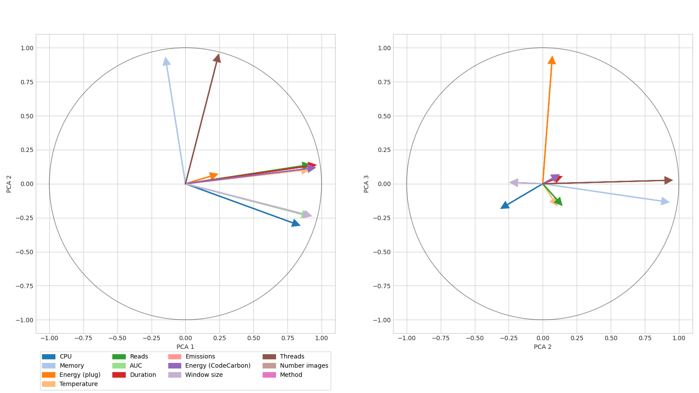
AUC, taille de fenêtre et Consommation CPU très corrélées aussi très corrélée Energie (CodeCarbon), température, nombre de lectures et durée d’exécution très corrélées Threads non corrélées aux performances de calcul (AUC), donc la parallélisation n’infue aps sur le résultat du calcul (ouf) Corrélation du nombre de thread avec la mémoire libre, donc anticorrélation avec l’utilisation de la RAM : plus on parallélise, moins on utilise de mémoire. Ce résultat est surpenant. Hypithèse, ceci est peut-être dû à la faible durée d’exécution de l’lgorithme sur ces données EXPLICATION COMPLEXE L’utilisation de la mémoire est cependant non corrélée avec la consommation énergétique
Energie (plug) plutôt seule décrite par le troisième axe de l’ACP, peu corrélée au reste (un peu avec la consommation Energie (CodeCarbon)) Hypothèse : les durées d’exécution étant courtes sur ces données selon cette méthode, un grand nombre de mesures de Energy (plug) sont à 0. Ainsi, elles apparaîssent comme peu corrélées au reste des métriques.
Pour 4 images : 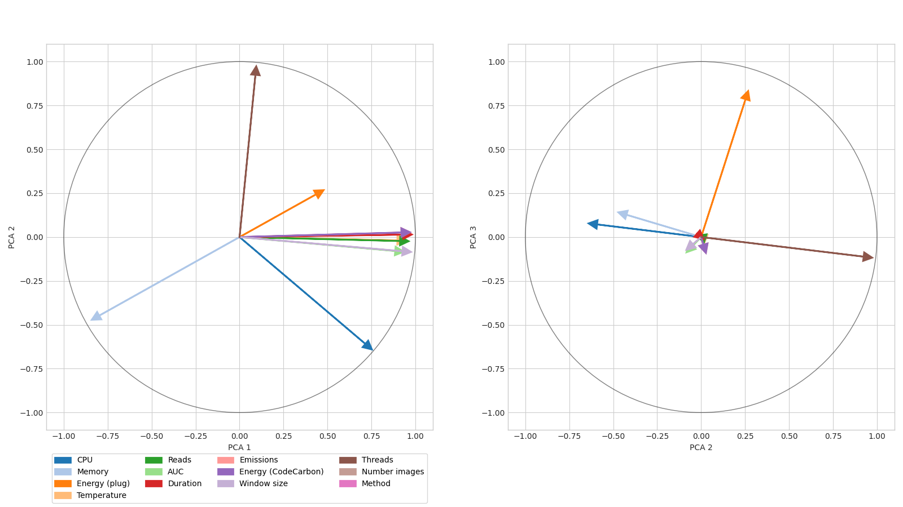
Résultats similaires, mais la mémoire libre est pluôt eanticorrélée avec le nombre de threads, donc la prallélisation entraîne une plus grande utilisation de la RAM : ce résultat fait intuitivement plus de sens
Pour 17 images : 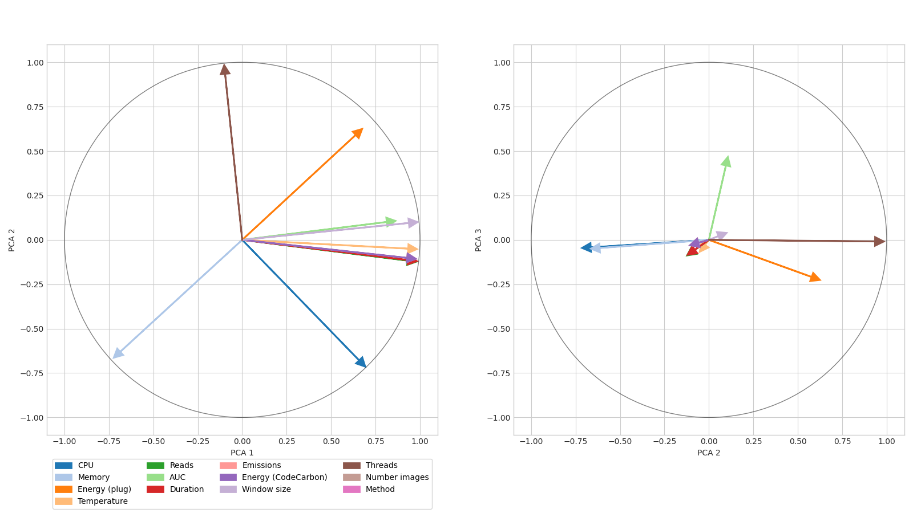
Résultats similaires à précédemment
Méthode robust GLRT :
Ici idem pour la taille de fenêtre, mais une plus grand nombre de threads induit une consommation énergétique inférieure à court terme, mais pas à long terme où un nombre de thread plus important induit une consommation énergétique accrue.
En visualisant les données, on observe que la parallélisation pour des grandes tailles de fenêtres selon la méthode robust GLRT accentue d’un facteur 2 la durée d’exécution ! La méthode de parallélisation paraît donc adaptée à des petites fenêtres d’estimations.
ACP :
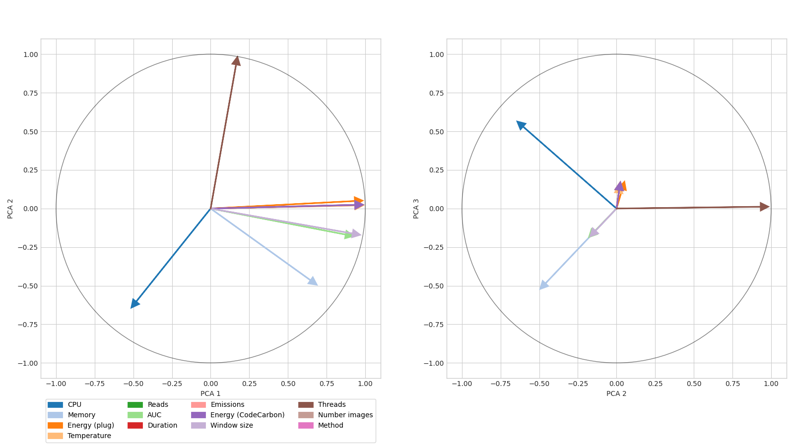
On observe des résultats similaires à la méthode GLRT sur des durées d’exécutions longues (4 et 17 images), mais la consommation énergétique est plutôt anticorrélée avec la consommation en CPU et en RAM (corrélée à la mémoire libre), tandis que la méthode GLRT était plutôt corrélée à celles-ci. Hypthèse : nous sommes sur des durée d’exécution considérablement plus longues ici, et il est possible que les autres composants de la machine compris dans les mesures de la prise connectée et de CodeCarbon aient plus d’influence à long terme : le GPU ! explication est peu triviale intuitivement
Méthode log difference :
Ici méthode très simple, ultrarapide, avec donc une faible consommation énergétique.
ACP :
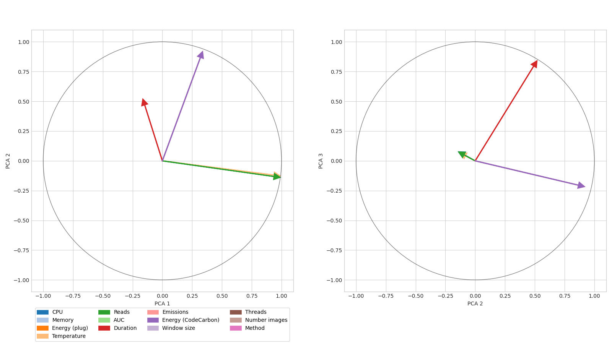
Peu de métriques varient ici, et l’analyse de l’ACP apparaît alors peu pertinente (peu de corrélation entre les métriques).
Clustering
Forte corrélation entre la température, le nombre de lectures, la durée d’exécution, et la consommation énergétique mesurée par la prise et celle récoltée par CodeCarbon.
Toujours corrélation positive entre la consommation énergétique mesurée par la prise et celle récoltée par CodeCarbon.
Méthode logdet :
Pour 2 images :
Pour 4 images :
La parallélisation induit ici une plus faible consommation énergétique, mais les mêmes performances de clustering (on a le même résultat, ouf !)
Une augmentation de la taille de la fenêtre induit une meilleure performance de clustering (score de Calinski-Harabasz), et une plus faible consommation énergétique ! En effet, dans notre algorithme, les données sont réduite, et l’effet de bord dû à la taille de la fenêtre considérée est alors important !
Pour 17 images :
Idem ici, mais on se rend compte de de l’importance du choix de la taille de fenêtre pour la performance de clustering : une taille de 5 pixels permet une meilleure performance qu’une taille de 7 pixels, mais ces perfroamcnes sont battues avec une taille de 21 pixels. Ceci est alors dû à la structure de la donnée !
ACP :
Pour 2 images : 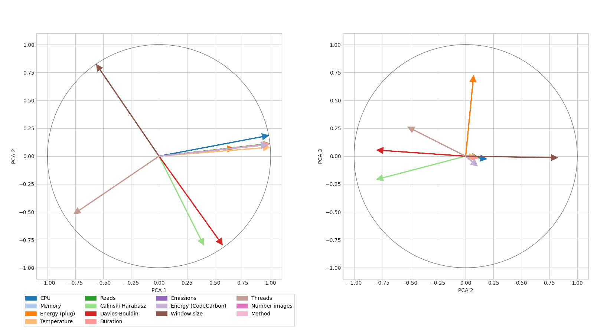
Pour 4 images : 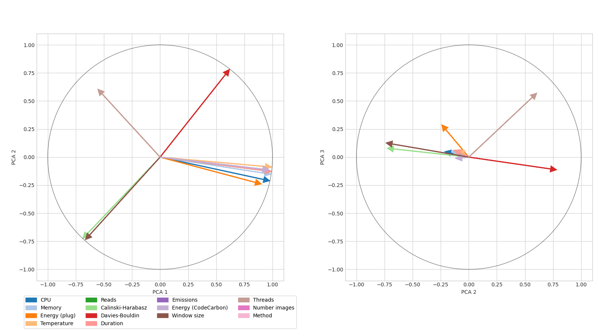
La taille de la fenêtre est très corrélées aux performances de clustering (corrélées au score de Calinski-Harabasz, anticorrélé à Davies-Bouldin). Les métriques de performancs énergétqieus Energy (plug), Energy (CodeCarbon), Température, durée d’exécution et consommation CPU sont très corrélées Ces métriques sont très corrélées à la mémoire libre, donc anti-corrélées avec l’utilisation de la RAM : Résultat surpenant. Hypothèse : Moins on utilise la RAM, plus on utilise le CPU, et plus on consomme d’énergie ? La parallélisation est également anticorrélée à ces métriques : plus on parlallélise, plus l’algorithe est rapide, moins on consomme d’énergie.
Pour 17 images : 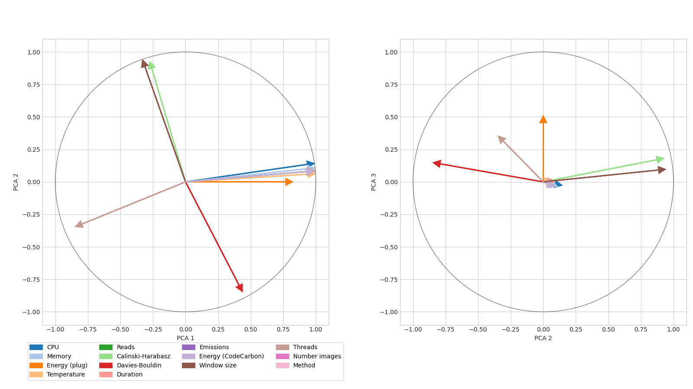
Idem
Méthode riemann :
Pour 2 images :
Pour 4 images :
Ici mêmes observations que pour la méthode 0, mais la parallélisation influe ici légèrement sur le résultat du clustering !
Pour 17 images :
Idem
ACP :
Pour 2 images : 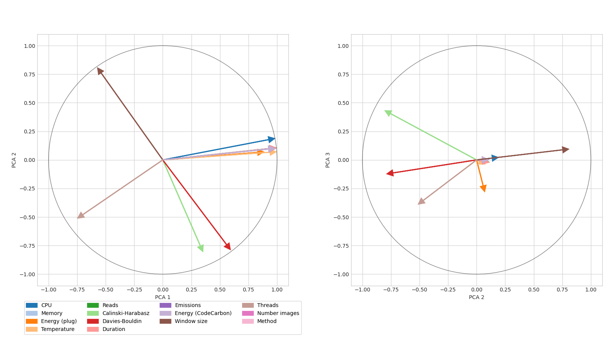
Pour 4 images : 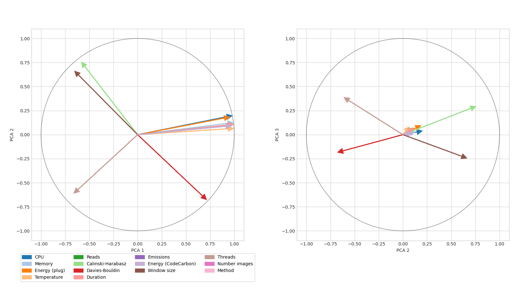
Idem que pour la méthode 0
Pour 17 images : 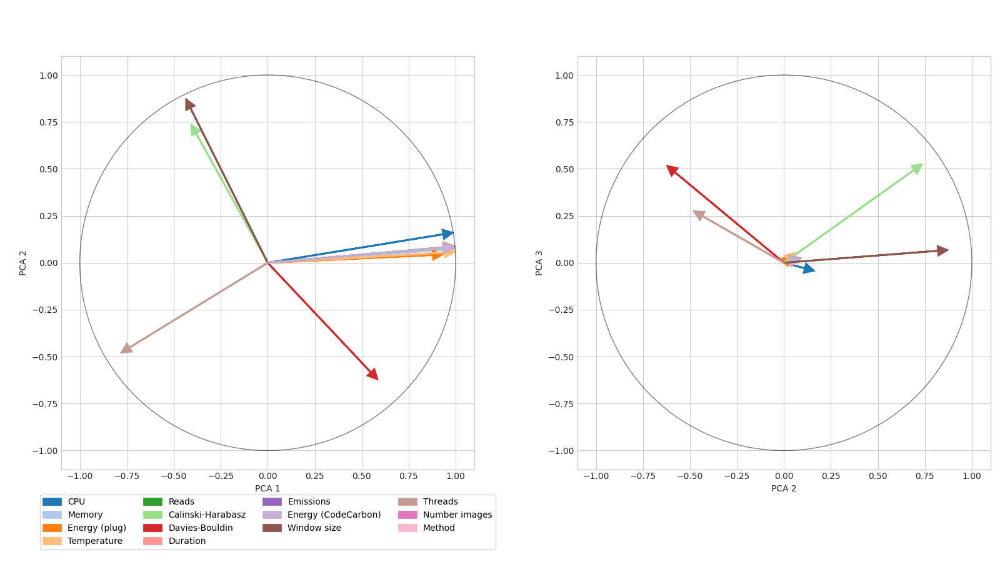
Idem
Conclusions
Nous avons observé une grande corrélation entre les métriques de consommation énergétique (Energy plug et Energy CodeCarbon). Cependant, selon la tâche réalisée, la méthode utilisée, et les données étudiées, les corrélations entre l’ensemble des métriques diffèrent significativement ! L’energie mesurée par la prise connectée appraâit alros comme porteuse de plus d’information que les autres métriques individuellement. Notre stratégie basée sur une approche empirique d’étude de frugalité d’algorithme appraît donc pertinente du point de vue de la prise en compte de l’impact réel des algorithmes utilisés.